Katmai Calling I: Brown Bears at Brooks River
August 20-26, 2026
Published on October 8, 2026
“Bears are made of the same dust as we, and they breathe the same winds and drink of the same waters. A bear’s days are warmed by the same sun, his dwellings are overdomed by the same blue sky, and his life turns and ebbs with heart pulsing like ours. He was poured from the same first fountain. And whether he at last goes to our stingy Heaven or not, he has terrestrial immortality. His life, not long, not short, knows no beginning, no ending. To him life unstinted, unplanned, is above the accidents of time, and his years, markless and boundless, equal eternity.” - John Muir

On the morning of August 20, 2026, I took off as a passenger on a DHC-2 Beaver floatplane bound for Brooks Camp in Katmai National Park & Preserve. This was a trip I had been planning for six months and I was slowly materializing plans over that time.
Even if you haven’t heard of Katmai National Park, you have likely seen pictures that were taken there. It is known as one of the best places on Earth to view wild brown bears. Every year, sockeye salmon from the Bristol Bay on the west coast of Alaska migrate up rivers and creeks to return to their spawning grounds with atomic precision. One of these rivers is Brooks River, a short 1.5-mile long natural canal connecting Lake Brooks and Naknek Lake. In the center of Brooks River is Brooks Falls, a six foot waterfall that salmon must clear. It takes some salmon multiple tries to make it up the waterfall. This creates a traffic jam of sorts, a “ONE LANE ROAD AHEAD” sign for fish. Brown bears, wickedly smart, know this, and every summer they return to Brooks Falls to feast on the salmon buffet. There is such an abundance of salmon that during the height of the annual run in July, they tolerate very close proximity to each other. There are days where dozens of bears are seen within 50 yards of each other.


At the mouth of Brooks River is Brooks Camp, your traditional hub for national park goers. Standard amenities like the visitor center, trading post, lodge, and campground are there. In most parks, especially in the lower 48, this would be located along a main road. Katmai doesn’t have a road into the park, and visitors must take either a floatplane or boat to get there. Lodging is competitive at Brooks. One must either enter a lottery two years in advance to stay in a cabin at Brooks Lodge or fight the granola horde to secure a campsite when reservations open months before.
Remember how I said that the salmon run peaks in July? This was part of my strategy to get a reservation. I didn’t even bother to try and fight the peak crowd. I instead opted to try for August, a gamble which paid off. I quickly booked a six night slot for two when reservations opened and when I was finished booking, all reservations for the month of August were taken by others.
Conditions in Alaska change fast. That is especially true in Katmai. August is known for having a lull in the salmon run. Bears disperse and go on walkabouts throughout the park. My gamble? Get more nights for a more relaxing stay with less guests, but take my chances and potentially see less, or even possibly no bears. I fully knew this when I booked (and you should, too).
I recruited my friend Ryan to come with me. A few weeks after I booked my campground reservations, he posted pictures from a winter wildlife photography workshop in Yellowstone. They were incredible. I’m talking about National Geographic-level wildlife photos. I knew right then that he should have the second spot on my trip. Ryan is much more easy going than me. I tend to get tunnel vision when it comes to my goals set in the great outdoors while he takes a step back and more easily notices what is around us that I might not always be thinking about, such as the birds in the park. While I was too busy on the trail thinking about bears or some mountain, he would point out everything that I was missing, from bear fur on tree bark to birds in the sky and on the ground. I would have missed so much had he not been at Katmai with me.


Thus began our trip in Austin, Texas on August 19, 2026. We flew out of Austin-Bergstrom International Airport to Seattle-Tacoma, then to Anchorage, and hopped over to King Salmon. We stayed one night at a campground in town before our ride on the floatplane the next day. After a 30 minute plane ride we arrived at Brooks Camp.
The first thing they do after you get off of the plane at camp is they shuffle you over to the visitor center to immediately attend bear school, a 20 minute presentation on bear safety since encounters are so common in Katmai. The main takeaways from bear school are:
1. Never approach a bear.
2. Never run from a bear.
3. Use your voice to alert bears of your presence.
Park rangers then give you a pin as proof you graduated bear school, and you are free to roam the area, grab your supplies, and set up camp.
After all of that, I immediately hiked the trail to Brooks Falls to see if there were any bears fishing. Ryan had to stay behind because he had to wait for a piece of luggage. The first time I hiked the Brooks Falls Trail, I hiked it alone, which was a little daunting but by the end of the week I wouldn’t be nervous hiking alone at all. I let out a sigh of relief after reaching the elevated walkway that takes you to the viewing platforms and hustled to the main platform.
Standing in front of me, just off the platform, was a behemoth of a mammal and eventual semi-finalist in Fat Bear Week. Known as 164 Bucky Dent, his presence would dominate our visit. He controlled the river in August. Other bears were off on their walkabouts but he remained behind with the falls mostly to himself. He fished in two main areas, one known as the jacuzzi immediately in front of the Brooks Falls Platform and also in the far pool on the opposite side of the river. I would eventually identify half a dozen bears that I saw throughout camp (and I probably saw a few more that I couldn’t identify), but Bucky is the only one that stayed in these two spots the whole time. He was also the only adult male I would see. I believe that Bucky knew his patience would pay off, and he stuck to these two spots and gorged himself on salmon when they sporadically appeared. Why waste your energy competing with bears elsewhere when you can just stay here, and be big enough to tell other males to go away? At this time the falls were not a buffet for 25 but were definitely enough to be a buffet for one or two. I am not a wildlife biologist nor am I trying to commit the cardinal sin of anthropomorphizing these bears, but I am certain that these creatures are very intelligent and he knew he could set up shop at the falls.


There was one bear that Bucky mostly tolerated being around while we were there. She is numbered 909, and she is famous for having mutually raised cubs with her sister, 910, in years prior. 909 was another constant presence in our time at Brooks Camp but she was more willing to go to other areas, either for the lack of competition or because Bucky would occasionally shoo her off. She would spend about half of her time at Brooks Falls and the other half downstream in other parts of the river, or napping on a lake shore.
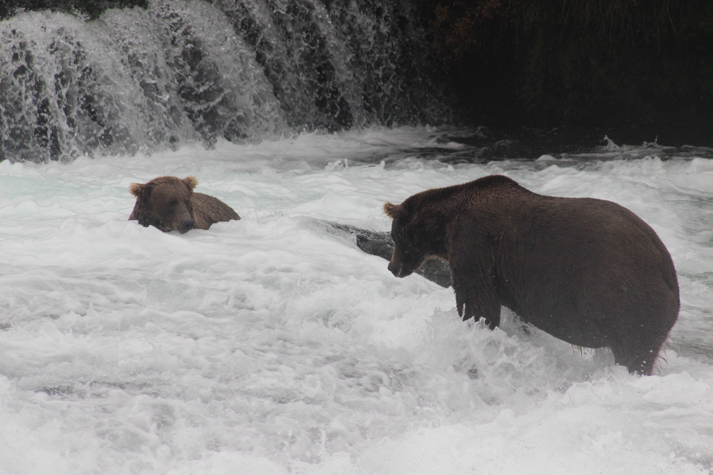
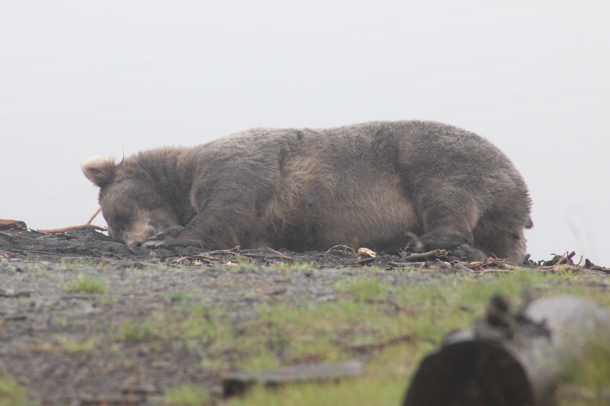
Bucky still had his choice of fishing spot while at the falls. If he was at the far pool, 909 was in the jacuzzi and vice versa. Periodically one of them would want the spot that the other occupied, and Bucky would always get what he wanted. Twice I witnessed 909 either refuse to budge or try and take Bucky’s spot and neither time ended with 909 getting what she preferred. Bucky gave her a mouthful until she moved.
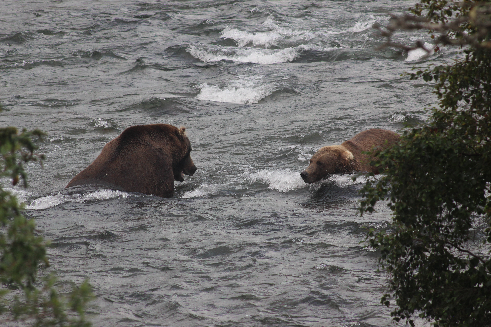
On the first evening, I witnessed something which convinced me that Bucky and 909 were being especially tolerant of each other but not other bears. A bear known as 384 approached the other two from upstream. Bucky watched closely and held his ground, and then 384 passed them off of the bank of the river before looping around and approaching 909 from behind, presumably wanting to fish near her or even take her spot. 909 snapped at 384 and chased her away from the river, underneath the platforms that we were standing on and up a steep hill before stopping and making aggressive noises at her for about five minutes until 384 ran off into the forest. 909 ran directly underneath me on her way back to the river, and for the first time I could understand how much bigger brown bears are than humans. She was about three times as wide as me from shoulder to shoulder and dense with muscle and fat. Bears are at the apex of evolution. I wrote in my journal that night:
“I’m keeping up with the Bear Kardashians… 909 ran back under the boardwalk, right underneath me! These bears are MASSIVE!!!”
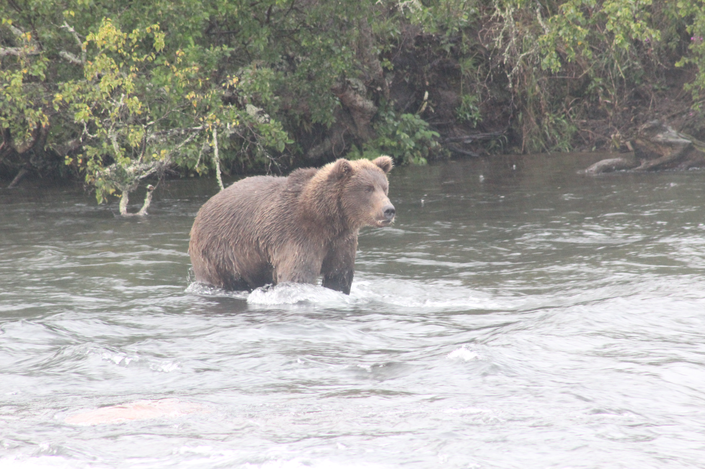
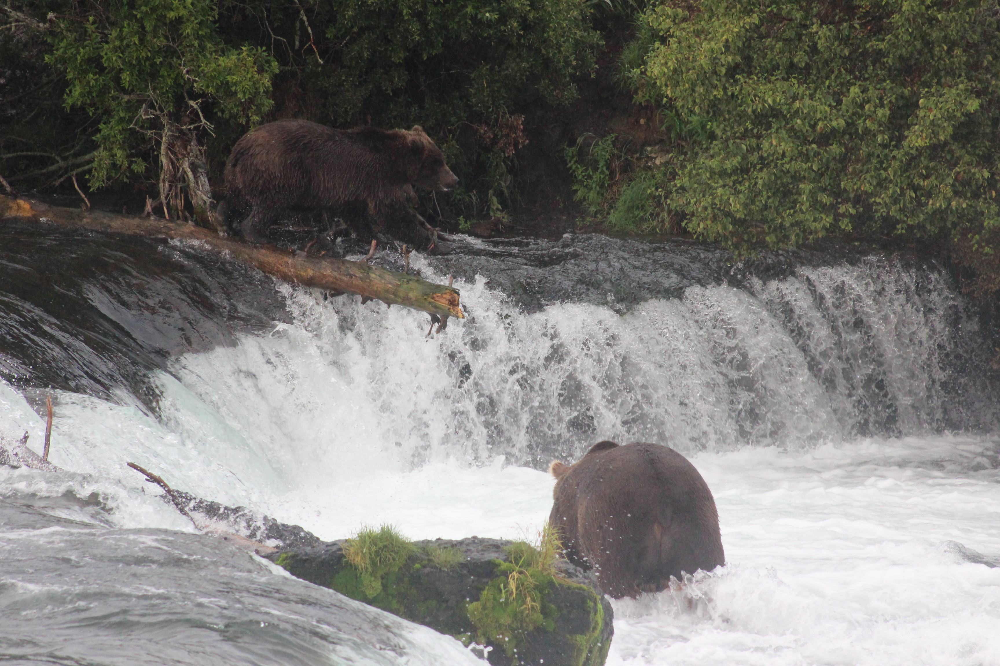
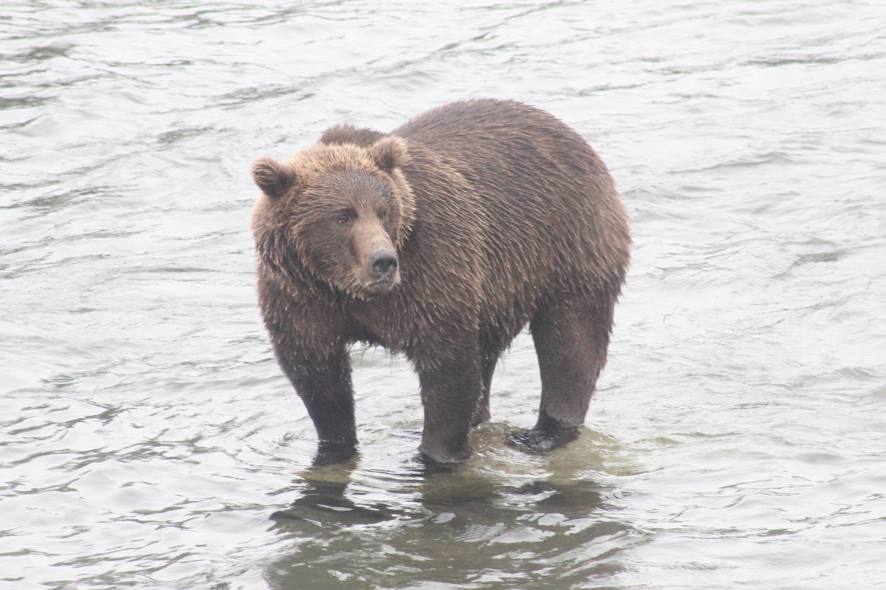
Despite Katmai’s remoteness, Brooks Camp gets crowded in the afternoon as day trippers arrive from Anchorage and King Salmon. Wait times at the main falls platform can get as long as two hours. There was never a real waitlist when I was there, but the platforms were still noticeably more crowded. I accounted for this by getting into a bear watching rhythm. I spent the early mornings and evenings at the bear viewing platforms before the day trippers arrived and the middays hiking or bear viewing elsewhere.
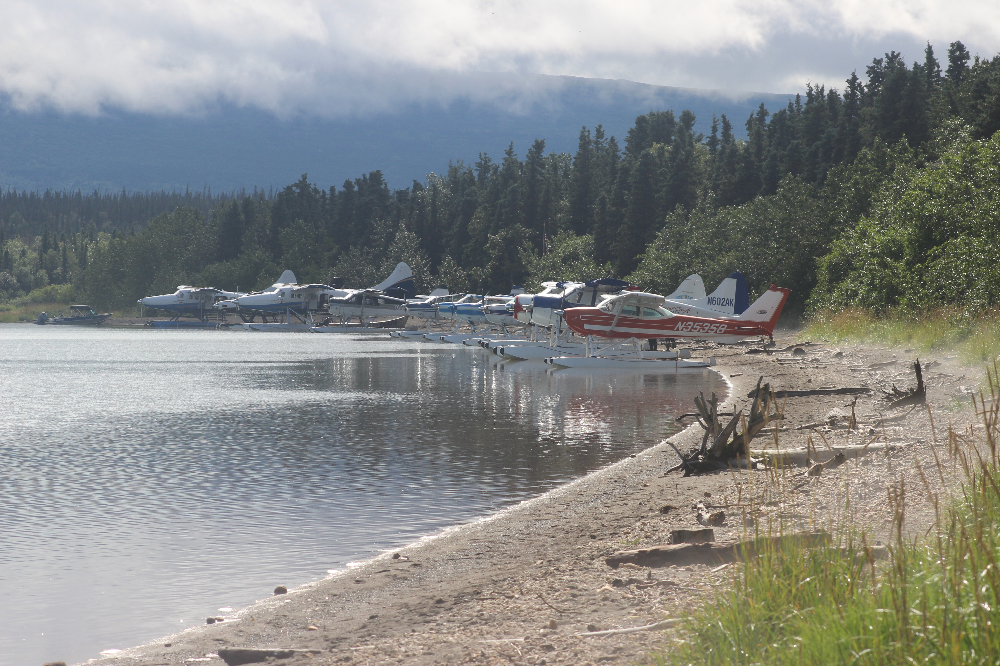
More cautious bears spent their time at the mouth of Brooks River, and so did campers cautious of day trippers. The mouth of the river is actually closer to the arrival point at Brooks Camp but everyone wants to see the main attraction at the falls, leaving this area open to those who want to put in a little more effort. The mouth is far more spacious than the falls area. I saw bears moving in the brush hundreds of yards upstream, and they would occasionally come down to the bridge crossing the mouth of the river and swim underneath it. There was little to no competition here. Salmon were either staging for a run or were completely exhausted, yet still hard to catch due to the river’s depth here.
428 Studious was one bear who was willing to deal with those circumstances. I was waiting at the bridge when I saw a big blonde bear emerge from the trees to my left. She paused and observed the water in front of her and I paused and observed her. I was safe on the bridge, but she was still very close. She studied the river. I can see why she got her nickname. She submerged herself in the water and began swimming around the mouth of the river looking for food, or perhaps she was just taking a midday swim to get somewhere else. I don’t recall her catching any fish in this encounter, but she was patient and keen. Her rotund shape was evidence that these traits were paying off.
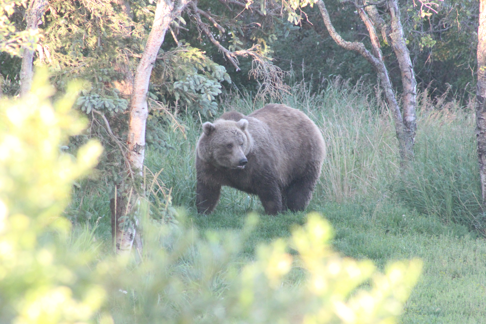
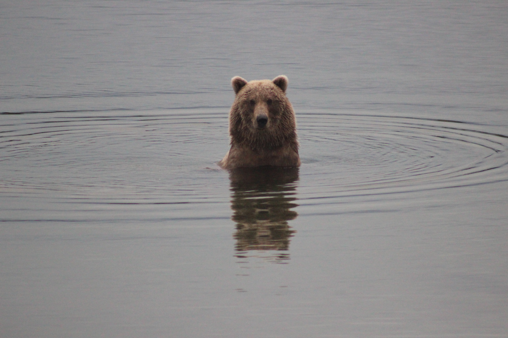
Even further from the bridge was a sandbar extending from the shore of Naknek Lake. 901, an adult female bear and her cub, who was limping, would spend their time here. The cub was injured a few weeks prior when it got a little too curious around a porcupine. The sandbar provided relative safety and a good place for her and her cub to feed on fish while it recovered from a harsh lesson learned.
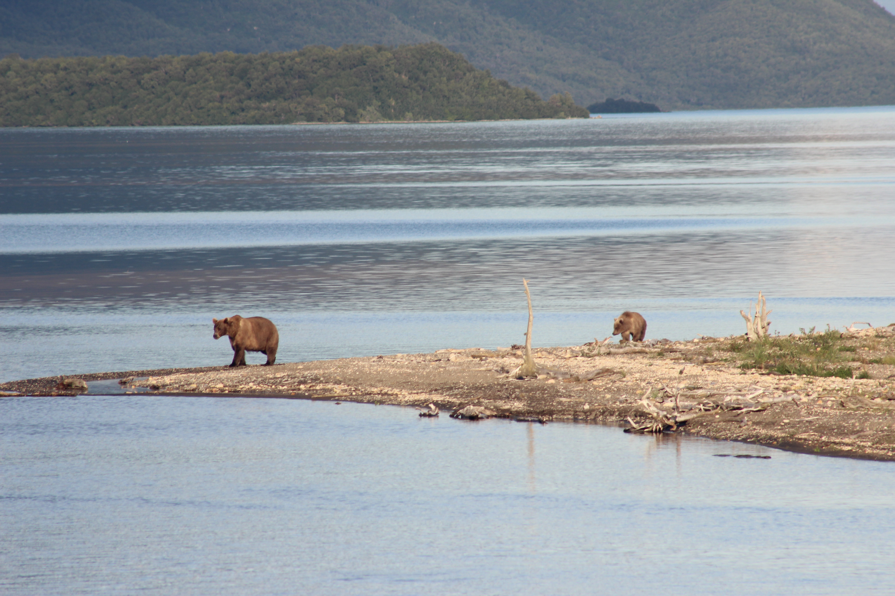
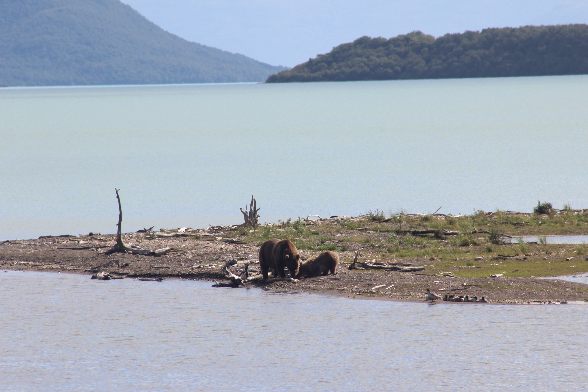
On my last day at Brooks Camp, 909’s sister, 910, made a brief appearance. Ryan and I were spending our last few hours in Katmai on the Riffles Platform, just downstream from the main falls platform when she approached from the far woods. She was on a mission and not taking any time to stop and fish. She reentered the woods opposite the side she came from and vanished. Shortly after, Ryan and I left the platform to catch our flight out of Brooks and on our left, just below the elevated walkway, 910 laid down and took a nice nap. I guess the need for nap time runs in the family.
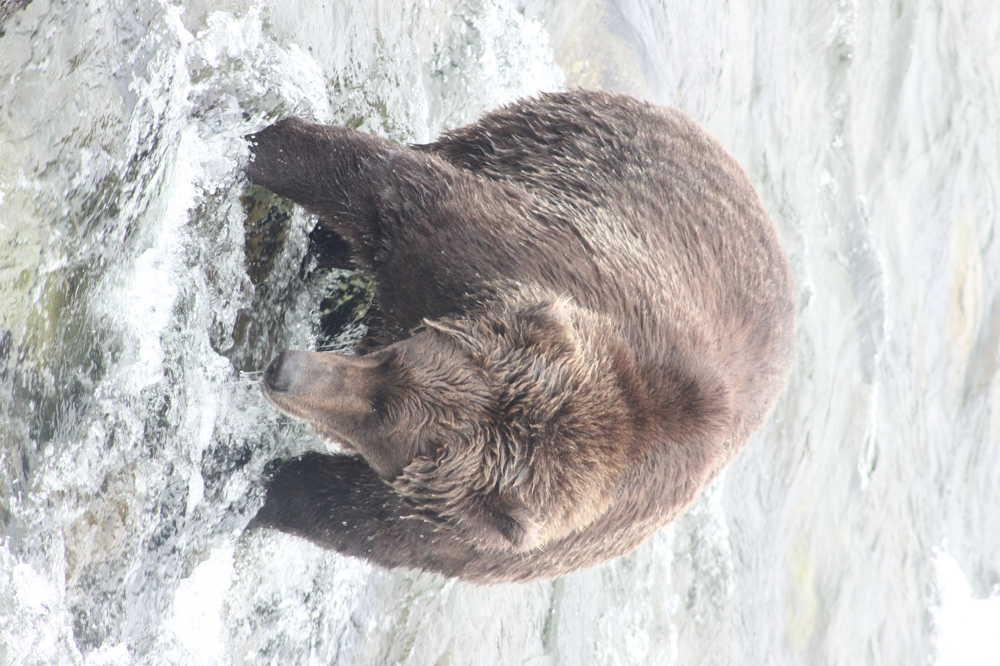
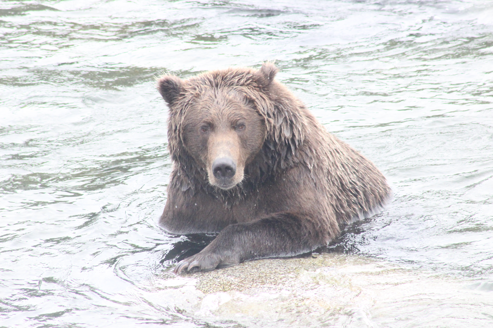
Ryan and I returned to camp and boarded our plane bound for King Salmon after six days in Katmai. What I have shared with you here is just a brief selection of highlights from my time bear watching. If I wrote about every encounter I remember I would have a tome as long as the Old Testament, except instead of biblical genealogies it would be numbers of fish caught sorted by bear and method.
Brooks Camp is an amazing place. There were times where I put the camera down and just watched the bears fish for hours. I wish I could do that every day. It’s an experience I am so grateful to have experienced and will hopefully get to do soon again. It’s hard to put this all into words because I don’t think I adequately can.
I hinted earlier that I did more than just bear watch, which is true! One day I hiked up to the top of Dumpling Mountain with two others, and another day I visited the Valley of Ten Thousand Smokes which is the reason this land was initially protected! Both experiences deepened my wanderlust even further. Each of those days will get their own respective write-ups immediately following this one. I hope you have enjoyed reading about these wonderful animals and seeing my pictures and will continue to read the rest that I have to write about Katmai.
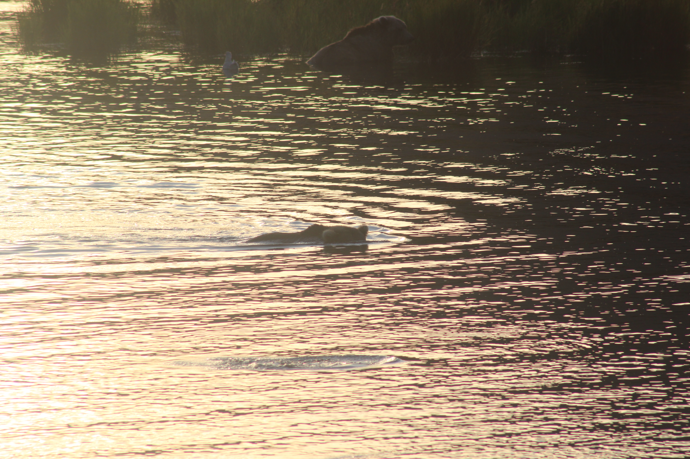
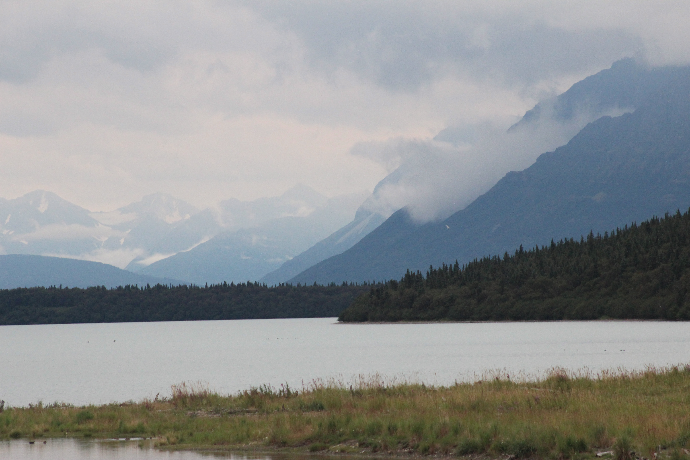